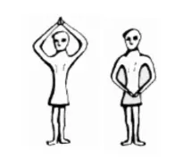

Rune Grimoire
Ingwaz
Modern Relevance
Ingwaz, named for the hero god Yngvi, signals a new beginning or emergence from difficulty. It promises victory and the start of a new chapter.
Tree, Element, and Deity
Tree: apple
Element: water/earth
Deity: Ing
Meaning: potential; male energy
Names Across Dialects
| Dialect | Word | Meaning |
|---|---|---|
| Proto-Germanic | ingwaz | The god Ing |
| Gothic | enguz / iggws | The god Ing, a man |
| Old English | Ing | The god or hero Ing |
| Old Norse | Ing / Yngvi | The god Ing (later a name of Freyr) |
| Icelandic | Ing | The god Ing |
| Norwegian | Ing | The god Ing |
Phonetic value: ng (as in "long")
Esoteric interpretation: the earth god
Ideographic interpretation: the male genitalia; alternately, the castrated male
The Earth God and Nerthus
Ingwaz is the name of an old Germanic earth god, who works in tandem with the earth mother, Nerthus. Their cult was most developed in ancient times in the North Sea regions. The Old English Rune Poem tells us:
Ing was at first
among the East-Danes
seen by men,
until he went eastward over the wave,
his wain rolled after him:
thus the Heardings
named the hero.
The wagon or chariot mentioned is the same used in the Nerthus cult. Ingwaz represents the male consort of the earth mother, and the priest who attends her. So strong was this cult among the peoples of the North Sea that they were often referred to as Ingvaeones ("those of Ing").
Freyr and the Fertility Rites
The Vanic god Freyr was also known as Yngvi, and he too took part in fertility rites in which he rode in a wagon in ritual processions. Freyr seems generally to have usurped the role and the name of Ing in the North.
In the Ing-Nerthus cult the female element consumes the male to replenish her powers after spending them giving fertility to the land and people. The myth of Freyr giving up his sword to gain Gerdhr, or the Odhinic name Gelding (castrated horse), may be illustrative. The male element represents the self-replenishing "cosmic food" of potential energy, which is held through winter by the goddess to be suddenly and violently released again in spring during the orgiastic processional ritual.
The Storehouse of Potential Energy
The NG-rune is a storehouse of potential energy that must undergo a gestation period in order to gain in strength. This is a principle that works on all levels of the multiverse, and it is a mighty rune of magick, for all power must undergo such a protected gestation period before it may be manifested in its most potent form.
One of the great secrets of Nordic sex magick is embodied in this rune.
Rune Character
The alternate symbol for this rune is much like the sigil of Azazel. This rune is the male counterpart to Berkano. Represents the God Ing. Ingwaz is the rune in which power is stored. Converts active power into potential power. Like a crystal, this rune stores energy until it is needed. It is a magickal reserve.
Crystal Pairings
- Ivory is the stone used with this rune
Keywords
- Potential energy
- Gestation
Galdr
ingwaz ingwaz ingwaz
ung ang ing eng ong
ong eng ing ang ung
Stadha
I. Stand straight with fingertips touching well overhead and elbows angled in the form of the stave.
II. Stand erect with fingertips touching just above the genitals with elbows forming the angles of the NG-rune.

Magickal Workings
- Storage and transformation of power for ritual use
- Fertility rites
- Passive meditation and centering of energy and thought
- Sudden release of energy
- Converting active power into potential power
Constructive Applications
The rune in which power is stored. Converts active power into potential power. Like a crystal, stores energy until it is needed. It is a magickal reserve. Male counterpart to Berkano.
Baneful Applications
Can deprive a person of their masculinity or anyone, male or female, of their life force.